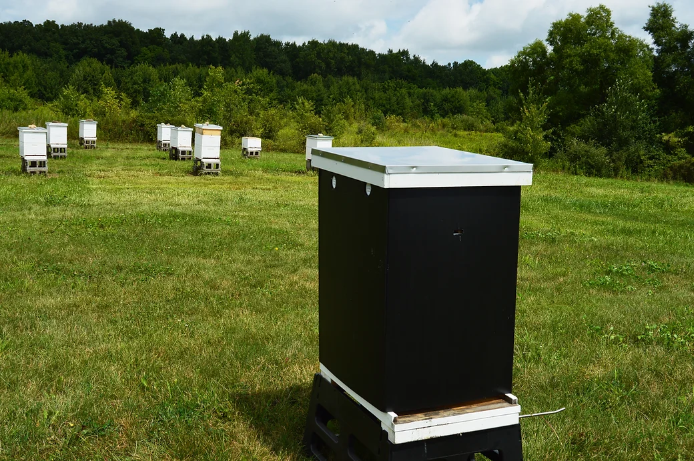

Exercise 4
Joe Endris
2023-10-03
Study background
During winter months, bee do not hibernate. Instead, members of the hive will consume food stores (honey) and use the energy to thermoregulate. This leads to winter being considered the highest risk season for beekeepers. Hive coverings are a technique used to insulate a hive and reduce the need for honey consumption through the winter. However, as climate change reduces the number of days with freezing temperatures in some locations, the effectiveness of hive coverings is unknown.

Hive cover example
Summary stats
summary(bee_model)##
## Call:
## glm(formula = Percent_change ~ Treatment, family = quasibinomial,
## data = bees)
##
## Coefficients:
## Estimate Std. Error t value Pr(>|t|)
## (Intercept) 5.3891 0.7186 7.500 3.73e-13 ***
## Treatment1 17.1770 2384.4715 0.007 0.994
## ---
## Signif. codes: 0 '***' 0.001 '**' 0.01 '*' 0.05 '.' 0.1 ' ' 1
##
## (Dispersion parameter for quasibinomial family taken to be 0.5140187)
##
## Null deviance: 14.125 on 429 degrees of freedom
## Residual deviance: 12.783 on 428 degrees of freedom
## AIC: NA
##
## Number of Fisher Scoring iterations: 21Plots
Autoplot

Binned residual plot

## (Intercept) Treatment1
## 5.389072 17.176997## Waiting for profiling to be done...## 2.5 % 97.5 %
## (Intercept) 4.244576 7.217564
## Treatment1 -399.602431 NA